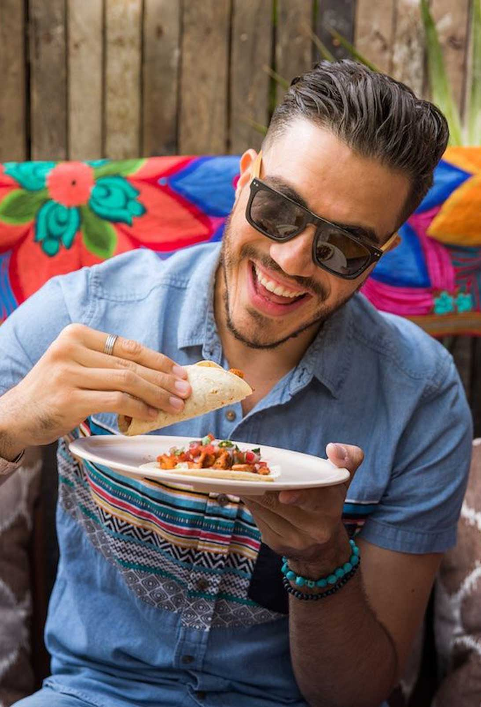
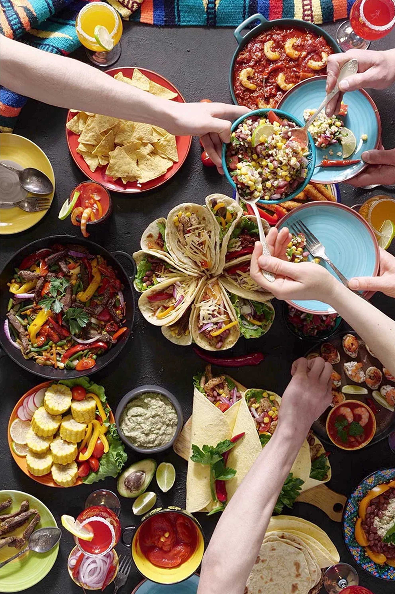
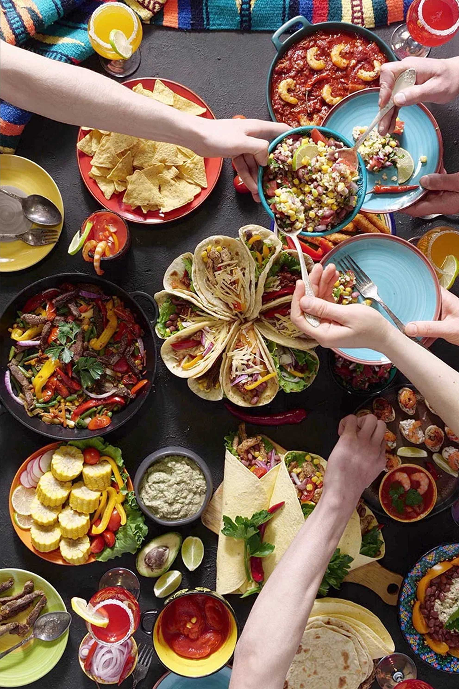

Bienvenido a
PLAFIME
PLAFIME es una pagina diseñada para recomendar y guiar en la creacion de platillos Mexicanos
Contactar

 

Bienvenido a
PLAFIME es una pagina diseñada para recomendar y guiar en la creacion de platillos Mexicanos
ContactarPanes tipo bolillo cortado al centro de la miga y untados con frijoles refritos, gratinados con queso, y aderezado con pico de gallo (tomate, chile y cebolla picados).
Desayuno
Pedazos de tortilla de maíz frita, salsa verde, crema de leche, cebolla, queso blanco, y opcionalmente huevo o pollo deshebrado.
Desayuno
Combinación de huevos revueltos con tomate, cebolla y chile picados y fritos .
Desayuno
Carne adobada, asada, servida en finas rebanadas sobre pequeñas tortillas de maíz, la carne puede ser una combinación de carne de cerdo y carne de ternera o puerco.
Comida
Consiste principalmente en una salsa de una gran variedad de ingredientes vertida sobre piezas de pollo
Comida
Chile poblano, relleno de un guisado de picadillo y frutas cubierto con crema de nuez de Castilla (nogada), hojas de perejil y granos de granada.
Comida
Plato a base de carne de borrego originalmente (aunque también se prepara con carne de res), adobado con una preparación a base de algunos tipos de chiles, condimentos y sal.
Cena
Tortilla media frita sumergida en un caldo espeso de frijoles molidos, enrolladas o dobladas, servidos con queso, cebolla y crema.
Cena
Tacos de birria bañados en salsa de chiles y especias atiborrado de queso, doraditas por fuera y suaves por dentro.
Cena
Bizcocho bañado con tres tipos de leche: leche evaporada, crema de leche y leche condensada.
Postre
Arroz cocido en leche con azúcar, canela, pasas y leche condensada.
Postre
Pan tostado, o añejado hasta que se deshidrata, cortado en rodajas puestas a cocer junto con trozos de plátano, pasas, nueces, guayaba y cacahuates, cubierto con jarabe de piloncillo y queso de mesa rallado.
Postre
Empieza tu día comiendo un desayuno muy Mexicano: Chilaquiles verdes.
Ver ahoraSi los habitantes de la Ciudad de México tuvieran que llevarse una sola comida a una isla desierta, muy probablemente sería ésta. Están influenciados por la cocina del Imperio Otomano, y mezclan carne marinada de puerco en trompo (sí, parecido al de shawarma) con tortilla de maíz, piña, cebolla, cilantro, y dosis al gusto de limón y salsa picante.
Leer Receta
Pedro de Alba SN, Niños Héroes, Ciudad Universitaria
plafime@gmail.com
+81123410921
Proyecto para la Facultad de Ingenieria Mecanica y Electrica Enero-Julio 2023